from river.datasets import synth
import pandas as pd
import numpy as np
from spotriver.utils.data_conversion import convert_to_df
n_train = 6_000
n_test = 4_000
n_samples = n_train + n_test
target_column = "y"
dataset = synth.FriedmanDrift(
drift_type='gra',
position=(n_train/4, n_train/2),
seed=123
)
train = convert_to_df(dataset, n_total=n_train)
train.columns = [f"x{i}" for i in range(1, 11)] + [target_column]
dataset = synth.FriedmanDrift(
drift_type='gra',
position=(n_test/4, n_test/2),
seed=123
)
test = convert_to_df(dataset, n_total=n_test)
test.columns = [f"x{i}" for i in range(1, 11)] + [target_column]24 The Friedman Drift Data Set
This chapter demonstrates hyperparameter tuning for river’s Mondrian Tree Regressor [SOURCE] with the Friedman drift data set [SOURCE]. The Mondrian Tree Regressor is a regression tree, i.e., it predicts a real value for each sample.
The data set was introduced in Section 23.1.
24.1 Setup
We will use a general experiment, data, evaluation, river-specific, objective-function, and surrogate setup similar to the setup from Section 23.2. Only the model setup differs from the setup in Section 23.2. Here we use the Mondrian Tree Regressor from river.
from spotriver.hyperdict.river_hyper_dict import RiverHyperDict
core_model_name = "forest.AMFRegressor"
hyperdict = RiverHyperDict
hyperdictspotriver.hyperdict.river_hyper_dict.RiverHyperDict24.1.1 Select a User Hyperdictionary
Alternatively, you can load a local hyper_dict from the “userModel” folder. Here, we have selected a copy of the JSON MondrianHyperDict hyperdictionary from [SOURCE] and the MondrianHyperDict class from [SOURCE]. The hyperparameters of the Mondrian Tree Regressor are defined in the MondrianHyperDict class, i.e., there is an key “AMFRegressor” in the hyperdict “mondrian_hyper_dict.json” file.
import sys
sys.path.insert(0, './userModel')
import mondrian_hyper_dict
hyperdict = mondrian_hyper_dict.MondrianHyperDict
hyperdictmondrian_hyper_dict.MondrianHyperDictfrom spotpython.utils.init import fun_control_init, design_control_init, surrogate_control_init, optimizer_control_init
from spotriver.fun.hyperriver import HyperRiver
fun = HyperRiver().fun_oml_horizon
fun_control = fun_control_init(
PREFIX="503",
fun_evals=inf,
max_time=1,
prep_model_name="StandardScaler",
test=test,
train=train,
target_column=target_column,
metric_sklearn_name="mean_absolute_error",
horizon=7*24,
oml_grace_period=7*24,
weight_coeff=0.0,
weights=np.array([1, 0.01, 0.01]),
core_model_name="forest.AMFRegressor",
hyperdict=hyperdict,
)
design_control = design_control_init(
init_size=5,
)
surrogate_control = surrogate_control_init(
noise=True,
n_theta=2,
min_Lambda=1e-3,
max_Lambda=10,
)
optimizer_control = optimizer_control_init()24.2 Modify hyper_dict Hyperparameters for the Selected Algorithm aka core_model
After the core_model and the hyperdict are added to the fun_control dictionary, the hyperparameter tuning can be started. However, in some settings, the user wants to modify the hyperparameters. This can be done with the set_int_hyperparameter_values, set_float_hyperparameter_values, set_boolean_hyperparameter_values, and set_factor_hyperparameter_values functions, which can be imported from from spotpython.hyperparameters.values [SOURCE].
The following code shows how hyperparameter of type float and integer can be modified. Additional examples can be found in Section D.15.1.
from spotpython.utils.eda import gen_design_table
print(gen_design_table(fun_control))| name | type | default | lower | upper | transform |
|-----------------|--------|-----------|---------|---------|-----------------------|
| n_estimators | int | 3 | 2 | 10 | transform_power_2_int |
| step | float | 1 | 0.1 | 10 | None |
| use_aggregation | factor | 1 | 0 | 1 | None |from spotpython.hyperparameters.values import set_int_hyperparameter_values, set_float_hyperparameter_values, set_factor_hyperparameter_values
set_int_hyperparameter_values(fun_control, "n_estimators", 2, 7)
set_float_hyperparameter_values(fun_control, "step", 0.1, 15)
print(gen_design_table(fun_control))Setting hyperparameter n_estimators to value [2, 7].
Variable type is int.
Core type is None.
Calling modify_hyper_parameter_bounds().
Setting hyperparameter step to value [0.1, 15].
Variable type is float.
Core type is None.
Calling modify_hyper_parameter_bounds().
| name | type | default | lower | upper | transform |
|-----------------|--------|-----------|---------|---------|-----------------------|
| n_estimators | int | 3 | 2 | 7 | transform_power_2_int |
| step | float | 1 | 0.1 | 15 | None |
| use_aggregation | factor | 1 | 0 | 1 | None |
Note: Active and Inactive Hyperparameters
Hyperparameters can be excluded from the tuning procedure by selecting identical values for the lower and upper bounds.
24.2.1 Run the Spot Optimizer
from spotpython.spot import spot
spot_tuner = spot.Spot(
fun=fun,
fun_control=fun_control,
design_control=design_control,
surrogate_control=surrogate_control,
optimizer_control=optimizer_control,
)
res = spot_tuner.run()spotpython tuning: 2.8255919704703896 [########--] 77.34%
spotpython tuning: 2.8255919704703896 [##########] 100.00% Done...
We can start TensorBoard in the background with the following command, where ./runs is the default directory for the TensorBoard log files:
tensorboard --logdir="./runs"We can access the TensorBoard web server with the following URL:
http://localhost:6006/24.3 Results
After the hyperparameter tuning run is finished, the progress of the hyperparameter tuning can be visualized with spotpython’s method plot_progress. The black points represent the performace values (score or metric) of hyperparameter configurations from the initial design, whereas the red points represents the hyperparameter configurations found by the surrogate model based optimization.
spot_tuner.plot_progress()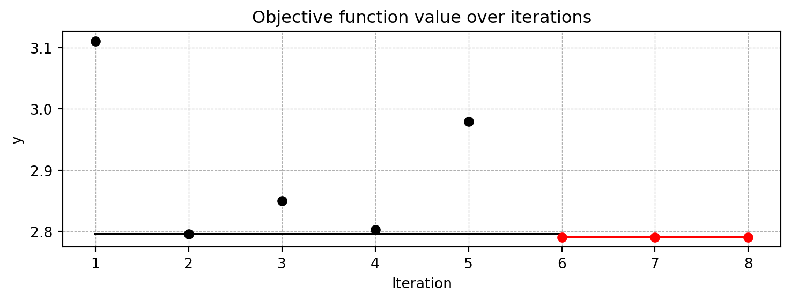
Results can be printed in tabular form.
from spotpython.utils.eda import gen_design_table
print(gen_design_table(fun_control=fun_control, spot=spot_tuner))| name | type | default | lower | upper | tuned | transform | importance | stars |
|-----------------|--------|-----------|---------|---------|---------|-----------------------|--------------|---------|
| n_estimators | int | 3.0 | 2.0 | 7 | 5.0 | transform_power_2_int | 100.00 | *** |
| step | float | 1.0 | 0.1 | 15 | 15.0 | None | 0.01 | |
| use_aggregation | factor | 1.0 | 0.0 | 1 | 1.0 | None | 0.19 | . |A histogram can be used to visualize the most important hyperparameters.
spot_tuner.plot_importance(threshold=10.0)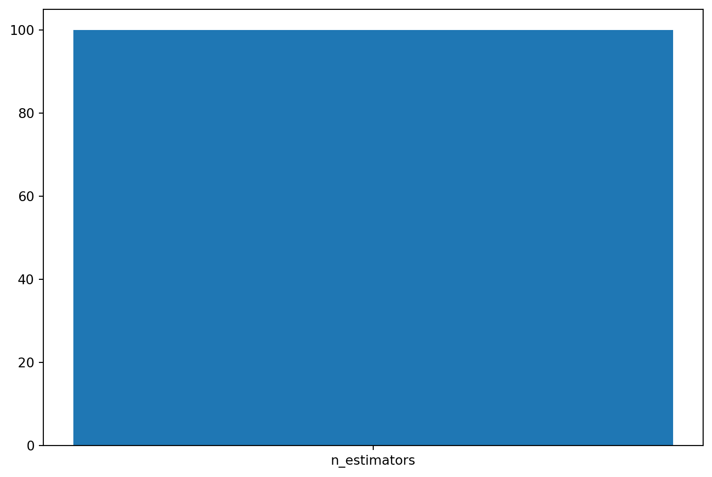
24.4 Performance of the Model with Default Hyperparameters
24.4.1 Get Default Hyperparameters and Fit the Model
The default hyperparameters, which will be used for a comparion with the tuned hyperparameters, can be obtained with the following commands:
from spotpython.hyperparameters.values import get_default_hyperparameters_as_array
X_start = get_default_hyperparameters_as_array(fun_control)spotpython tunes numpy arrays, i.e., the hyperparameters are stored in a numpy array.
from spotpython.hyperparameters.values import get_one_core_model_from_X
model_default = get_one_core_model_from_X(X_start, fun_control, default=True)24.4.2 Evaluate the Model with Default Hyperparameters
The model with the default hyperparameters can be trained and evaluated. The evaluation function eval_oml_horizon [SOURCE] is the same function that was used for the hyperparameter tuning. During the hyperparameter tuning, the evaluation function was called from the objective (or loss) function fun_oml_horizon [SOURCE].
from spotriver.evaluation.eval_bml import eval_oml_horizon
df_eval_default, df_true_default = eval_oml_horizon(
model=model_default,
train=fun_control["train"],
test=fun_control["test"],
target_column=fun_control["target_column"],
horizon=fun_control["horizon"],
oml_grace_period=fun_control["oml_grace_period"],
metric=fun_control["metric_sklearn"],
)The three performance criteria, i.e., score (metric), runtime, and memory consumption, can be visualized with the following commands:
from spotriver.evaluation.eval_bml import plot_bml_oml_horizon_metrics, plot_bml_oml_horizon_predictions
df_labels=["default"]
plot_bml_oml_horizon_metrics(df_eval = [df_eval_default], log_y=False, df_labels=df_labels, metric=fun_control["metric_sklearn"])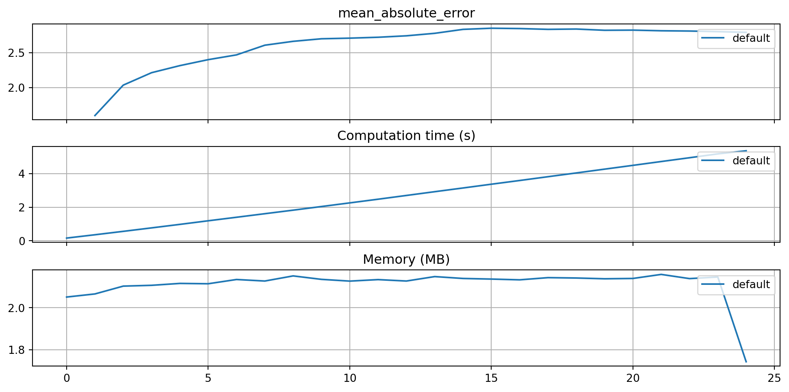
24.4.3 Show Predictions of the Model with Default Hyperparameters
- Select a subset of the data set for the visualization of the predictions:
- We use the mean, \(m\), of the data set as the center of the visualization.
- We use 100 data points, i.e., \(m \pm 50\) as the visualization window.
m = fun_control["test"].shape[0]
a = int(m/2)-50
b = int(m/2)+50
plot_bml_oml_horizon_predictions(df_true = [df_true_default[a:b]], target_column=target_column, df_labels=df_labels)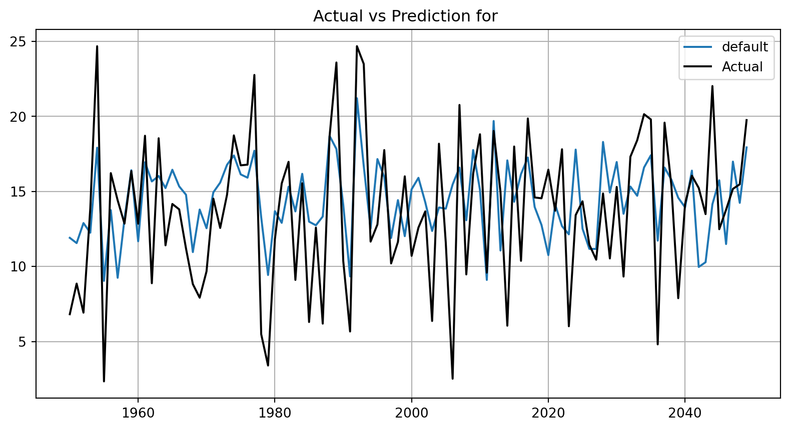
24.5 Get SPOT Results
In a similar way, we can obtain the hyperparameters found by spotpython.
from spotpython.hyperparameters.values import get_one_core_model_from_X
X = spot_tuner.to_all_dim(spot_tuner.min_X.reshape(1,-1))
model_spot = get_one_core_model_from_X(X, fun_control)df_eval_spot, df_true_spot = eval_oml_horizon(
model=model_spot,
train=fun_control["train"],
test=fun_control["test"],
target_column=fun_control["target_column"],
horizon=fun_control["horizon"],
oml_grace_period=fun_control["oml_grace_period"],
metric=fun_control["metric_sklearn"],
)df_labels=["default", "spot"]
plot_bml_oml_horizon_metrics(df_eval = [df_eval_default, df_eval_spot], log_y=False, df_labels=df_labels, metric=fun_control["metric_sklearn"])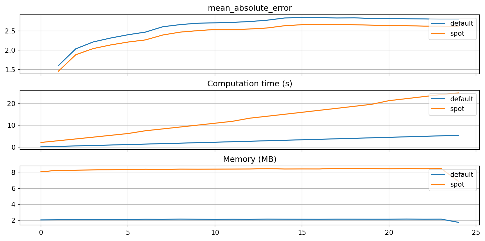
plot_bml_oml_horizon_predictions(df_true = [df_true_default[a:b], df_true_spot[a:b]], target_column=target_column, df_labels=df_labels)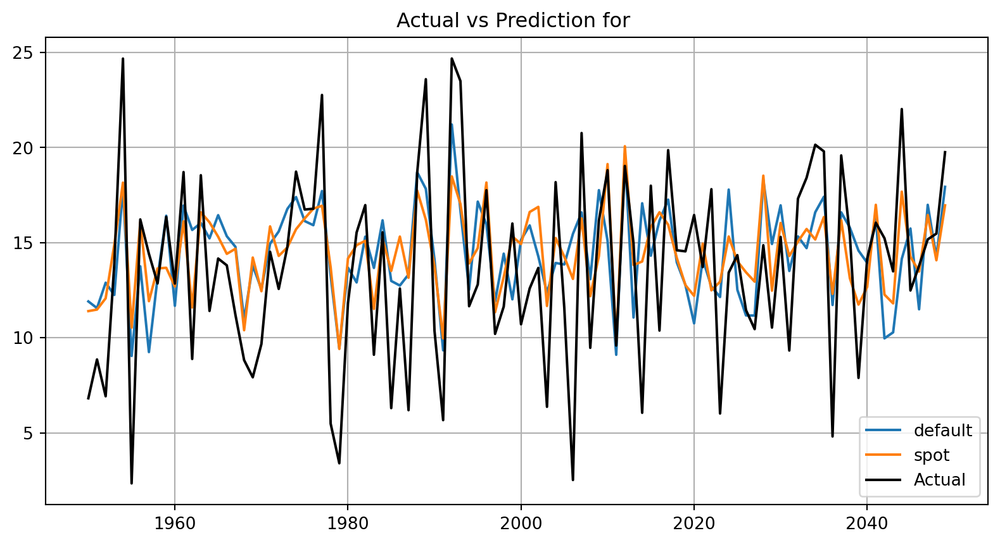
from spotpython.plot.validation import plot_actual_vs_predicted
plot_actual_vs_predicted(y_test=df_true_default[target_column], y_pred=df_true_default["Prediction"], title="Default")
plot_actual_vs_predicted(y_test=df_true_spot[target_column], y_pred=df_true_spot["Prediction"], title="SPOT")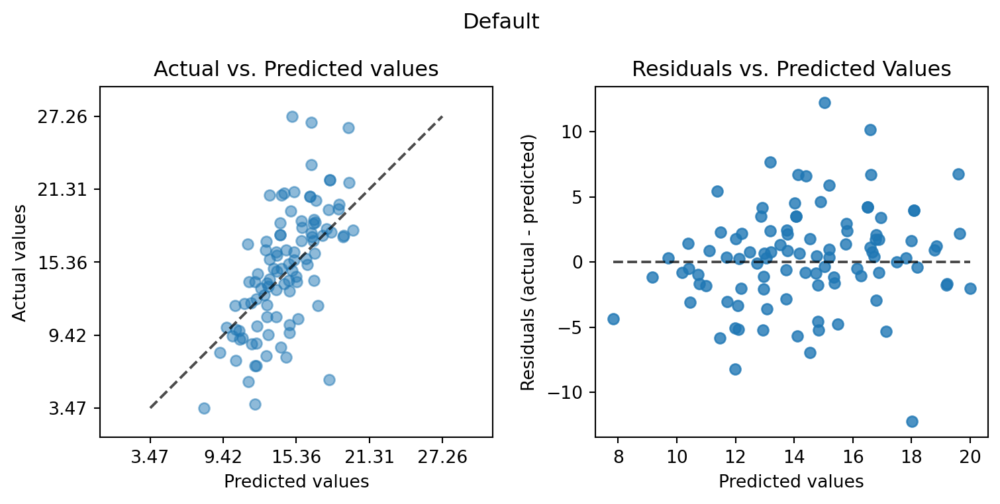
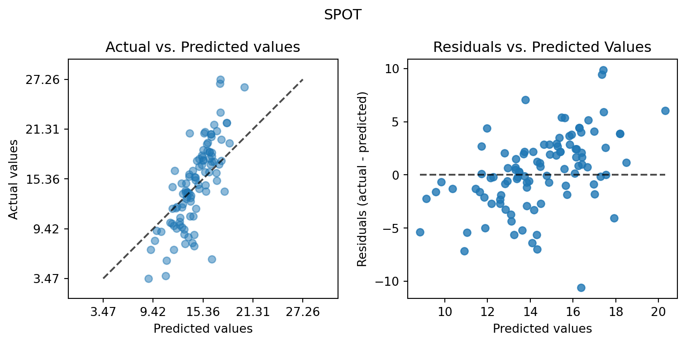
24.6 Detailed Hyperparameter Plots
spot_tuner.plot_important_hyperparameter_contour(max_imp=3)n_estimators: 100.0
step: 0.009114589828580816
use_aggregation: 0.18869817472783376
impo: [['n_estimators', 100.0], ['step', 0.009114589828580816], ['use_aggregation', 0.18869817472783376]]
indices: [0, 2, 1]
indices after max_imp selection: [0, 2, 1]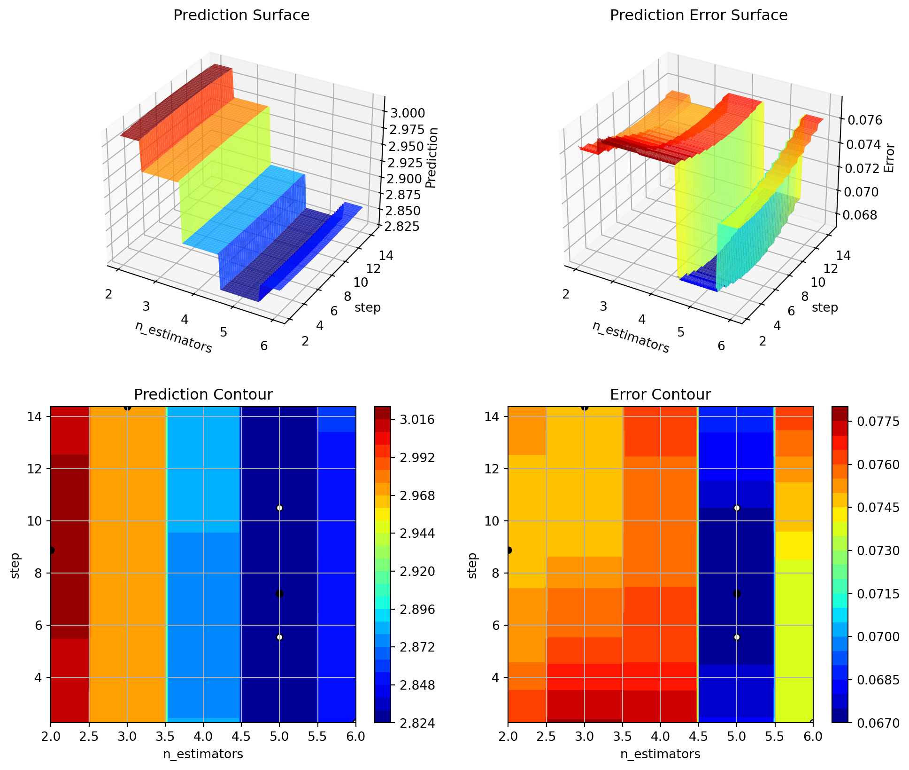
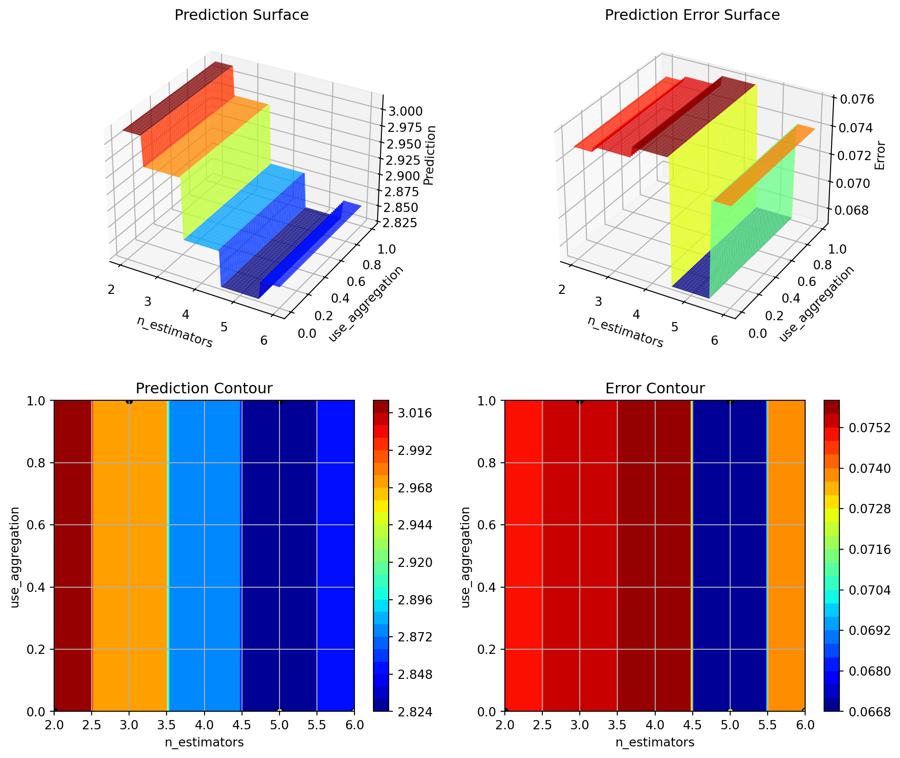
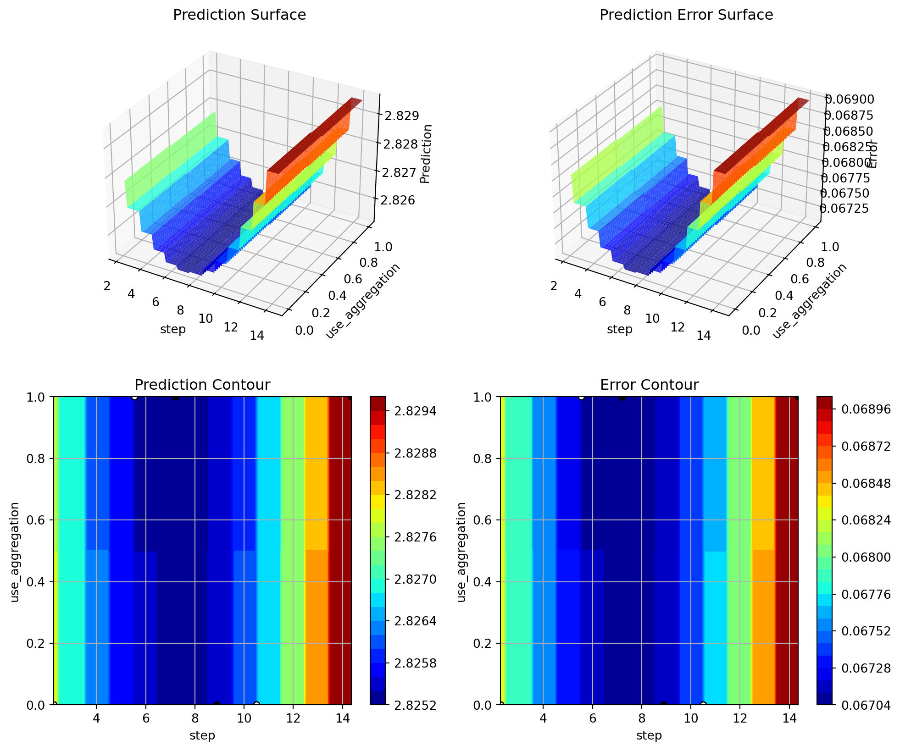
24.7 Parallel Coordinates Plots
spot_tuner.parallel_plot()